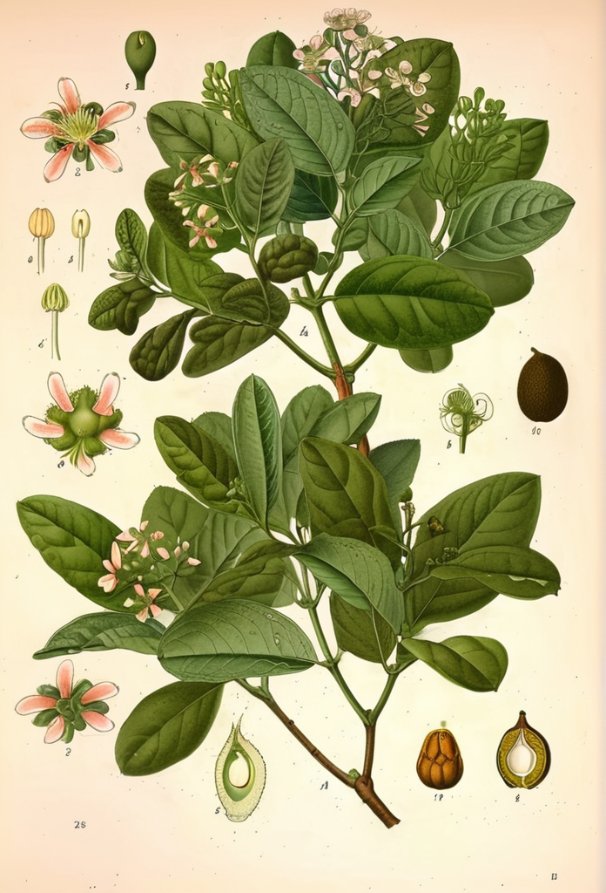

Peumus boldus
Boldo
Boldo
La Peumus boldus, conocida como boldo, es un arbusto perenne nativo de Chile y el sur de Argentina. Sus hojas aromáticas han sido utilizadas tradicionalmente como digestivo y hepático.
Para el pueblo mapuche, el boldo (koitü en mapudungun) era un remedio sagrado para el hígado y la digestión. Los colonizadores europeos observaron su uso y la llevaron a la medicina occidental.
Clasificación Botánica
| Familia | Monimiaceae |
|---|---|
| Género | Peumus |
| Especie | boldus Molina |
| Origen | Chile central y sur, Andes de Argentina, 500-1 500 msnm |
| Partes usadas | Hojas |
Compuestos Activos
Las hojas contienen alcaloides isoquinolínicos (boldina), aceites esenciales (p-cimol, eucaliptol, ascaridol), flavonoides (boldoglucósido) y terpenos.
Usos Tradicionales
En la medicina tradicional chilena, las hojas de boldo se preparan en infusión para tratar trastornos digestivos, dispepsia, hepatitis y cólicos biliares. También se usa como carminativo y antiemético.
Evidencia Científica
Gotteland et al. 1997 Un ensayo clínico mostró que la boldina de las hojas de boldo estimula la secreción biliar y mejora la función digestiva.
Lemaire et al. 2008 Los compuestos del boldo mostraron actividad antioxidante y antiinflamatoria en modelos de estudio in vitro.
Precauciones
El boldo debe usarse con moderación. Dosis elevadas pueden causar mareos, vértigo y alucinaciones. No debe usarse durante el embarazo, lactancia ni en niños menores de 12 años. Personas con cálculos biliares deben consultar a un médico antes de usarlo.